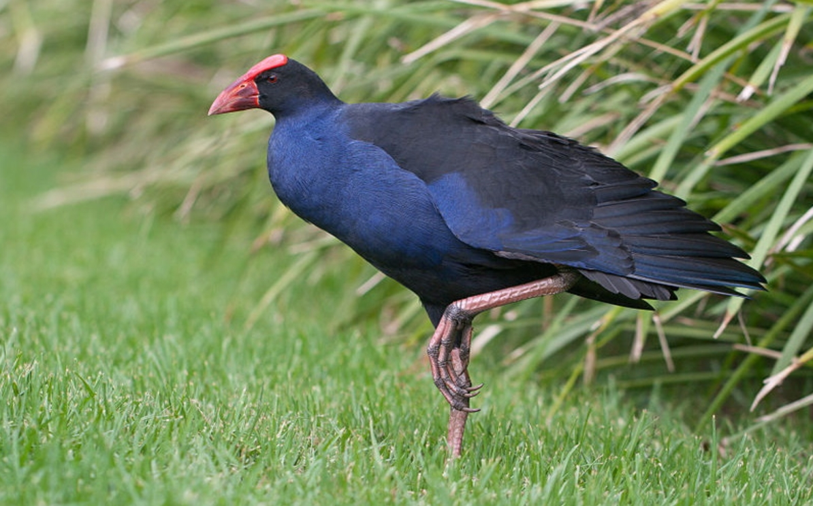
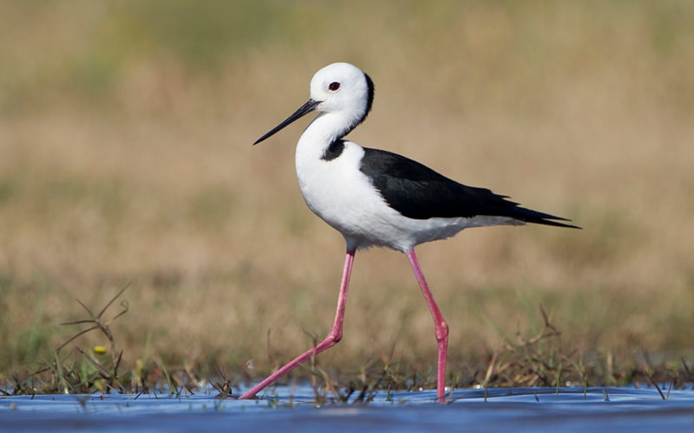
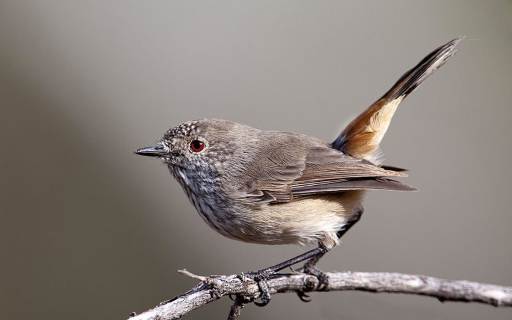
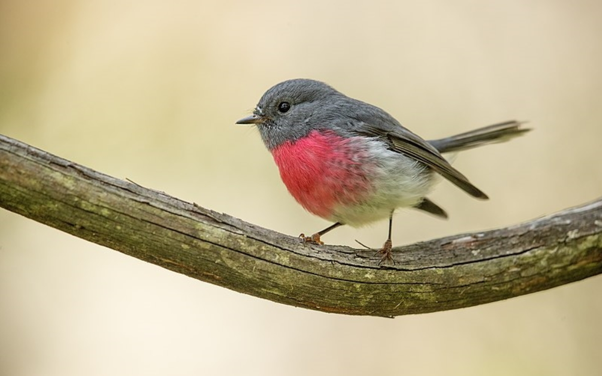

Pardalote (diamond bird or spotted fruit pecker) is a group of small songbirds mainly distributed in
Australia. They belong to the Passeriformes order, but may belong to different families depending on
the specific species, such as the Flower pecker family, the Spotted Honey pecker family, or the
Spotted Fruit pecker family. These birds are known for their unique appearance and ecological
habits.
Appearance features
Pardalote is small in size, with a short and round tail. Most species have prominent colors on their
back or head, such as sparkling gem like white fur on their black back, or bright yellow, red, and
other markings. For example, the red browed spotted fruit pecker is known for its orange red
eyebrows, while the yellow browed spotted fruit pecker is characterized by its small size and short
tail.
Ecological Habits
These birds mostly inhabit tropical forests, shrublands, eucalyptus forests, as well as arid and
semi-arid regions in Australia. They mainly feed on insects and their larvae, and are typical
arboreal birds that often forage on leaves and bark. During the breeding season, Pardalote builds
its nest in tree holes, cracks in buildings, or by digging tunnels on sandy shores or flat ground.
Species diversity
There are many species of Pardalote, including various birds under the genus Pardalotus, such as the
spotted diamond bird (P. punctatus) known for its habit of digging tunnels as nests. In addition,
there is also the Pardalotus, a multi spotted honey eating bird
Tetragintus and other species belong to the family Trichomycteridae. These birds play an important
role in the Australian ecosystem and are an indispensable part of maintaining ecological balance.
Protecting the current situation
Although Pardalote is widely distributed in Australia, some species may face threats due to habitat
loss and fragmentation, climate change, and other factors. Therefore, protecting the habitats of
these birds, reducing the impact of human activities on them, and strengthening scientific research
to understand their ecological needs are of great significance for maintaining Australia's
biodiversity.
Pardalote (diamond bird or spotted fruit pecker) not only attracts the attention of bird enthusiasts
with its beautiful appearance and unique habits, but also serves as an indispensable ecological link
in nature. Their efficient foraging behavior helps control pest populations and maintain forest
health. Meanwhile, these birds are also important representatives of ecological diversity, and their
presence enriches Australia's natural landscape.
With the deepening of people's understanding of the natural environment, protecting Pardalote and
its habitat has become a consensus. By implementing ecological protection projects, strengthening
public education, and promoting sustainable development, we can create a safer and more suitable
living environment for these charming birds. Let us work together to safeguard this precious
treasure from nature.
Purple swamp

Purple swamp henToby Hudson (CC-by-SA)
The purple swamp hen may actually refer to a bird species that inhabits specific environments and
has purple toned feathers, but the name "purple swamp hen" does not conform to the formal biological
classification. In biology, it is more likely to refer to the Purple Water Chicken (scientific name:
Porphyrio)
porphyrio）， This is a medium-sized wading bird belonging to the family Cricetidae in the order
Crane.
The body length of the Purple Water Chicken is about 44 centimeters, with mostly purple or blue
feathers. The tail feathers are white, and the wings and chest are blue-green. The mouth is thick
and bright red, and the tarsus and toes are long and strong, appearing dark red. They mainly live in
marshes and reeds around rivers and lakes, and feed on insects, molluscs, aquatic plants, etc.
Purple water chicken is extremely rare in China, only found in western and southern Yunnan, as well
as a few areas in Fujian. It is one of the important protected bird species in China.
Purple water chicken not only has a beautiful appearance, but also plays an important role in the
ecosystem. They can control the number of pests, maintain the ecological balance of wetlands, and
are also indicator species of the health status of wetland ecosystems. Therefore, protecting the
purple water chicken and its habitat is of great significance for maintaining biodiversity and
ecological balance.
White haired stilts

White haired Wtilt/JJ Harrison (CC by SA)
The term 'white headed stilts' may have some misunderstandings or confusion, as' white headed' is
usually associated with birds (such as the white headed sandpiper) or plants (such as the white
headed Weng), while 'stilts' is a traditional folk performance art form. However, if we understand
'white headed stilts' as a form of stilt performance with specific characteristics or names, we can
briefly introduce it from the following aspects:
White headed stilts (assumed to be a specific form of stilt performance) may be a folk art that
combines stilt skills with specific cultural elements (such as the symbolism or style symbolized by
"white head"). It originated in China, especially in areas with profound cultural heritage, such as
Baicang Ancient Town in Shaoyang County, Hunan Province, where stilt art has a long history and
exquisite skills.
In performance, the white headed stilts attract the audience with their high level of skill,
thrilling movements, and unique shapes. Artists perform lion dances, dragon dances, and other
performances on stilts, characterized by "height," "danger," and "wonder," showcasing superb skills
and a spirit of unity and cooperation. At the same time, the white headed stilts may also
incorporate elements of local opera, folk stories, etc., making the performance more diverse and
rich in local characteristics and cultural heritage.
Inland Rhinoceros Bird

Inland Hornbill Author: Peter Jacobs (CC by SA)
The inland hornbill, as a unique and precious large bird species, is mainly distributed in tropical
rainforest areas of Africa and southern Asia. Among them, it is only found in western and southern
Yunnan and southern Guangxi in China. This type of bird is named Rhinoceros because it has a copper
helmet like protrusion on its head that resembles a rhinoceros horn. Their body length can reach 70
to 120 centimeters, and their mouth is long and wide, accounting for about one-third of their body
length, making them very suitable for climbing trees and eating fruits. Rhinoceros mainly feeds on
fruits, especially fig fruits, and also preys on small animals such as insects, reptiles, and
amphibians.
In China, there are five species of inland hornbills, including the double horned hornbill, the
crested hornbill, the crested crested hornbill, the brown necked hornbill, and the diphtheria
hornbill. Dehong, Yunnan is the only place in China where all five species of hornbills have been
recorded. These hornbills exhibit unique behaviors during their breeding season, with females being
confined in burrows to incubate and raise chicks, while males deliver food outside the burrow.
Rhinoceros not only has a unique appearance, but also maintains emotional loyalty. Male and female
rhinoceros follow the "monogamous" system, and if one person dies, the other may go on a hunger
strike due to grief, hence they are also known as "lovebirds".
Ross Robin, JJ Harrison

Ross Robin, JJ Harrison (CC by SA)
Robin bird, also known as the robin bird, is a popular small songbird, commonly known as the
Eurasian Robin (Erithacus)
rubecula）。 This bird species is distributed around the world, especially in the UK. It is not only
the national bird, but also carries profound cultural and symbolic significance. Here is a brief
introduction to the Robin bird:
Appearance features: Robin birds are small in size, with a body length generally between 12 and 15
centimeters, a wingspan of about 20 to 22 centimeters, and a weight of about 160 to 220 grams. Their
most prominent feature is the red orange feathers on their face to chest, especially in male
individuals, where this red spot is particularly bright. However, young birds do not have this
feature, but their genitals are covered with dense brown spots.
Living habits: Robin birds enjoy living in various environments such as forests, shrubs, forests,
parks, and gardens, with the most common habitat being forests. They can not only jump flexibly on
trees, but also walk and forage on the ground, which is an ability that many birds do not possess.
In addition, the Robin bird is also a migratory bird that migrates from the south to the north every
spring to breed, and returns to the south to avoid the cold in winter.
Cultural symbol: In the UK, the Robin bird is regarded as a symbol of spring, and its appearance
often heralds the end of winter and the arrival of spring. This bird also symbolizes romance,
happiness, and unwavering love. Its singing is pleasant and pleasant, often associated with
beautiful things by people. Robin birds also frequently appear in British literature and art,
becoming an indispensable element.
Ecological value: Robin birds play an important role in the ecosystem as they prey on agricultural
pests and make a positive contribution to maintaining ecological balance. However, with the
acceleration of urbanization and the destruction of habitats, the number of Robin birds is gradually
decreasing. Therefore, protecting the Robin bird and its habitat has become a focus of attention for
people.